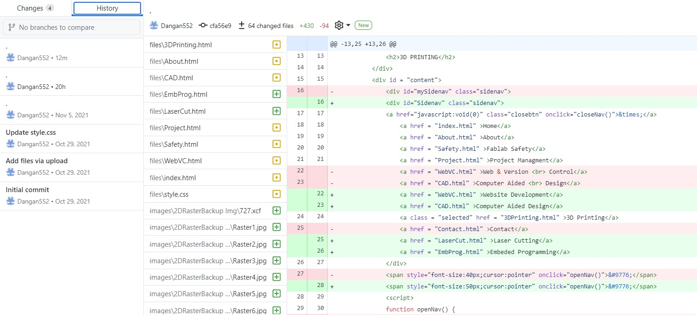

Introduction
Github is used not just to host your website but to keep track of changes that you have made when coding. In this webpage I will show you how to use Github for Version Control.
Version Control With Github
In Github, a repository is where you manage all your project work and it contains your project files and version history.
Version Control in Github is usually done on Github Desktop and you can clone, create or add a repository into the software.
You can also view the entire development history of your repository and revert any changes that you have made to it.
There are 3 main functions you should know when using Version Control in Github:
|
|